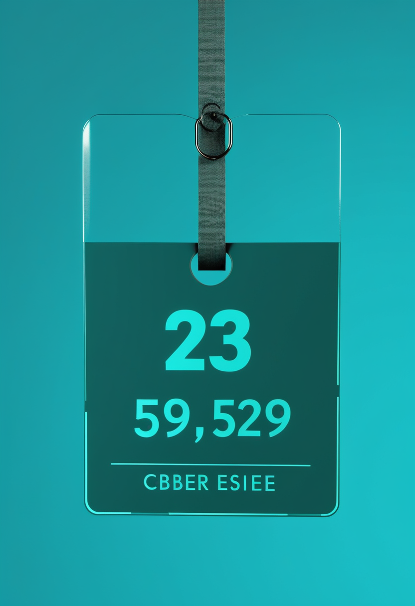
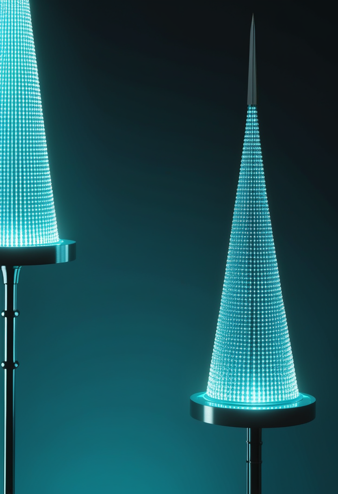
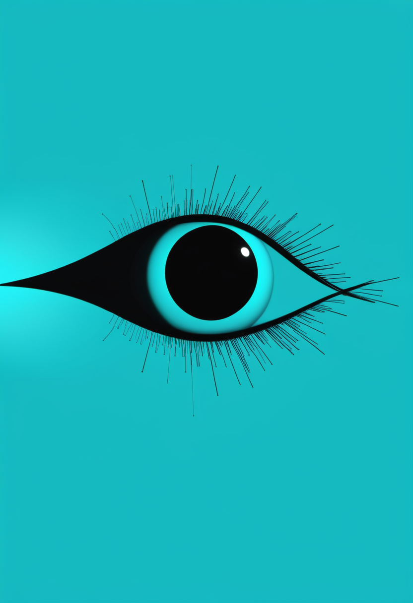
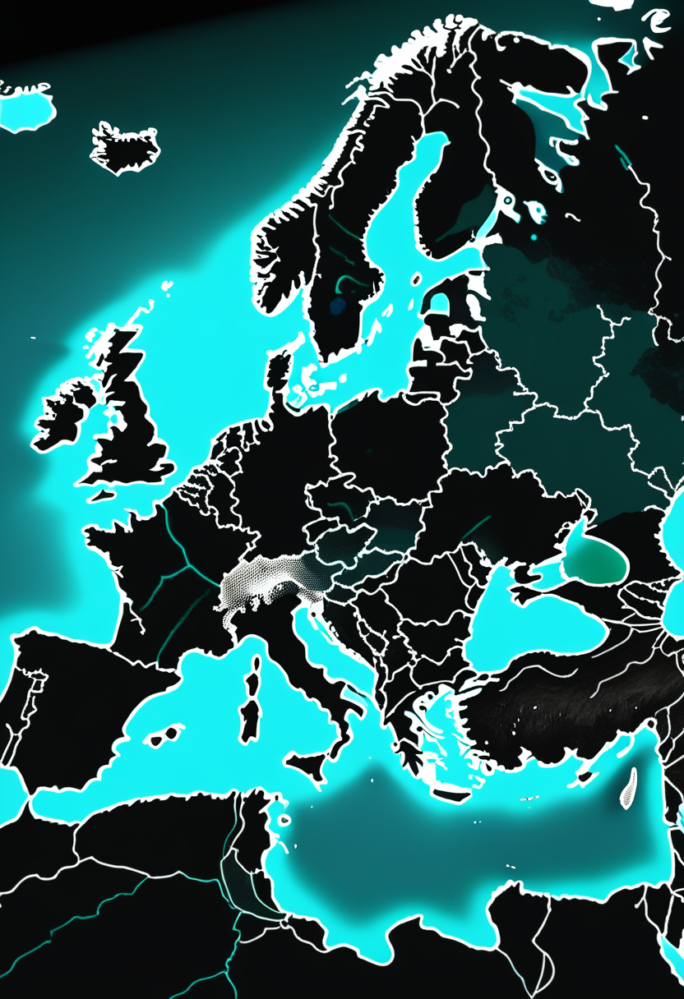
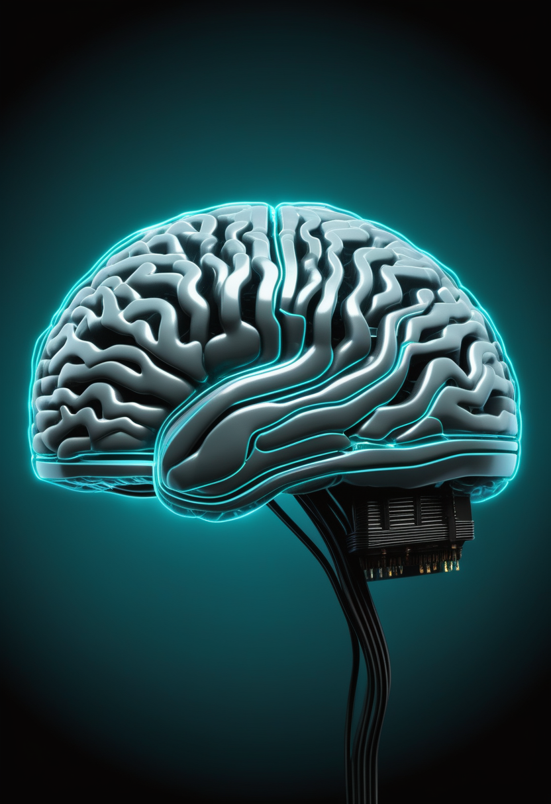

水曜日の便り。DRCのブンディブギョ型エボラで、ECDCとDRC国立公衆衛生研究所(INSP)の集計がついに同じ数字――確定7,672例・死亡3,699人――に収束した。だが同じ更新で、接触者の追跡率は87.6%から79.9%へ落ちた。台帳が揃うことと流行が制御へ向かうことは別だという週になった。命の章は英国で、スコットランドの承認済み3剤すべてが発症前の乳児に届くようになり、イングランドは10月から設備の整った7か所で新生児スクリーニングを始める。自由の章では、ミシガン州の女性がParadromics社の植込み型BCIで実時間の発話を取り戻し、試みた言葉と内で生成しただけの言葉を装置が区別できることが分かった。基盤の章は上のエボラのほか、米国の麻疹接種率が2.8ポイント下がったこと、mpoxの直近6週間の内訳を伝える。畏敬の章では、中性子星が伴星の恒星風を捕える様子がXRISM衛星で初めて直接観測され、天問二号がカモオアレワへの到達後の並走観測を終えて採取へ向かう。美の章は、雄のショウジョウバエ全中枢神経系の結線図が完成したこと、神経信号を言語にする過程に言語モデルが挟まる権利の論点、そして死者を模したAIに人がフィクションと知りつつ正確さより情緒を求めるという調査を扱う。
9/20号の続報 ― 本紙はこの一週間、DRCのブンディブギョ型エボラを複数の台帳が別々に数える話を書き続けてきた。前号までは6州と7州、7,475例と7,614例に割れていた二つの台帳があった。その二つがようやく同じ数になった。ECDCが9月20日に公表した集計(9月19日までのデータ)は確定7,672例・死亡3,699人。DRC国立公衆衛生研究所(INSP)が9月21日に出した報告も同じ7,672例・3,699人、致死率48.2%(本紙計算48.21%)である。前号で割れていた版図も、7州で一致した。ところが同じECDCの更新に、悪化した数字が混じっている。接触者の追跡率が79.9%まで下がった。9月17日公表時点の87.6%から、二日分のデータで7.7ポイントの低下である。確定7,672・死亡3,699は、いずれも歴代二位の規模を更新し続けている。数え方が揃うことと、流行が制御に向かうことは別である。むしろ台帳が揃ったのは、拡大した版図をすべての報告経路がようやく認めたからだ。そして追跡率は、次の症例がどこから出るかを予測できる割合を示す。80%を切るということは、5人に1人以上の接触者が視界の外にいるということである。本紙が前号まで数えていたのは、すでに起きたことだった。79.9%という数字が指すのは、まだ起きていないことのほうである。
スコットランド医薬品コンソーシアム(SMC)は、ヌシネルセン(スピンラザ)を発症前の5q SMAに対し、NHSスコットランド内での限定使用として受け入れた。判断は2026年8月に公表されている。対象はSMN2遺伝子のコピー数が2または3の発症前乳児である。委員会が検討した証拠は、早期の治療が過去の対照群と比べて転帰を大幅に改善することを示していた。9/19号で本紙は、この受け入れ自体を報じている。今回加わったのは、この決定が持つ意味の広がりである。これにより、認可済みのSMA治療3剤――ヌシネルセン、リスジプラム、オナセムノゲン アベパルボベク――のすべてが、スコットランドでは症状が出る前の乳児に使えるようになった。前提には検査がある。スコットランドは2026年3月23日にSMAの新生児スクリーニングを開始しており、症状が出る前に患者を見つける仕組みが先に立っていた。順序としては、検査が先で薬が後である。
検査の側が動くのはイングランドである。英国国立スクリーニング委員会(UK NSC)によれば、NHSイングランドにおけるSMA新生児スクリーニングの実地評価(ISE)は2026年10月に始まる。当初の予定より3か月早い。初期段階は、SMAのスクリーニングに必要な機器をすでに備えている7か所の新生児スクリーニング検査室で実施され、イングランドで生まれる新生児の推定72%を覆う。残る6か所は2027年10月から開始し、生まれた場所にかかわらず全員が対象になる。検査室は合計13か所である(本紙検算)。設計として注目すべきは、全国一斉ではなく、設備の整った場所から始めて1年で残りを埋めるという段取りを最初から公表している点である。地域差が生じることを隠さず、その地域差に期限を付けている。本紙が9/19号で扱った日本の状況、すなわちこども家庭庁の実証事業から都道府県ごとに公費化が広がる段階と比べると、違いは実施率ではなく、いつ揃うかが決まっているかどうかにある。

費用の側は、前号から持ち越した曖昧さがそのまま残っている。9月11日にFDAが承認したISEMBYLD(イセンビルド、apitegromab-mstn)について、STAT Newsは典型的な患者で年間の表示価格(list price)が約31万ドルになると報じた。一方、Citeline Scripは見出しで正味費用(net cost)31万ドルとしている。金額は一致するが、表示価格と正味費用は本来まったく別の数である。表示価格は割戻し前の建値で、正味費用は保険者との交渉後に実際に動く額に近い。どちらを指すのかは9/16号の時点でも一致せず、本号の出典でも変わらない(要確認)。この曖昧さは、本欄の前2項と無関係ではない。スクリーニングが広がれば、発症前に見つかる患者が増える。ISEMBYLDはSMN2標的治療を置き換える薬ではなく、その上に積む併用薬であり、費用は既存治療への上乗せになる。誰にいつ届くかを決める仕組みが整うほど、次に効いてくるのは、その費用がどの数字を出発点として交渉されるかである。
前号で本紙は「検査の地図を先に揃えるべきだ」と書いた。本号の英国は、その揃え方を二通り見せている。スコットランドは検査を先に始め、約5か月後に薬の適応を発症前へ広げ、3剤すべてが出そろった。イングランドは設備のある7か所から始め、残り6か所の開始時期を2027年10月と先に決めている。どちらも地域差があること自体は否定していない。違うのは、その地域差に終期が設定されているかどうかである。ここに費用の話が重なる。約31万ドルという数字が表示価格なのか正味費用なのか定まらないうちに、見つかる患者の数だけが先に増える。検査が届くかどうかは地理の問題で、薬が届くかどうかは価格の問題であり、両方が別々に解かれなければならない。
Paradromics社は9月14日、Connect-One早期実現可能性試験の第1被験者が、同社の植込み型BCI「Connexus」で実時間の発話とテキストによる意思疎通に成功したと発表した。9/16号で本紙は、この被験者への最初の外科的植込みが6月17日にミシガン大学ヘルスで行われ、今後6年にわたり追跡されると報じている。被験者は進行性の運動ニューロン疾患により発話が大きく損なわれた60代のミシガン州在住女性で、研究者が用意した文を写す課題を越え、自分で言葉を選び、自由回答の質問に答え、通話で孫と会話した。発話に関わる神経活動を言語へ復号し、テキストと合成音声として本人へ返す実時間の閉ループが成立したことになる。技術的にはもう一つの所見が重い。同社は、実際に発話を試みているとき(attempted speech)と、身体的には試みずに内的に言語を生成しているとき(imagined speech)とで、区別できる神経活動のパターンを特定したとしている。試験は3施設で行われ、主任研究者はUCデイビス保健のDavid M. Brandman氏、ほかにマス・ジェネラル・ブリガム神経科学研究所のDaniel Rubin氏とミシガン大学保健の臨床チームが参加する。

承認へ向かう道筋は一つではない。Synchron社のStentrodeは開頭を伴わず、血管を通して運動野の近くの血管内に留置する方式である。同社のCOMMAND試験は被験者6人・12か月追跡で主要安全性評価項目を達成し、脳および血管系に対する機器関連の重篤有害事象は報告されなかった。同社は2025年後半に2億ドルのシリーズDを調達し、植込み型BCIとして初となる市販前承認(PMA)を狙う検証試験を2026年に計画している。対比は電極数に出る。Stentrodeは16、NeuralinkのN1は1,024で、64倍の開きがある(本紙計算)。N1は頭蓋の一部を外して運動野へ電極を挿入する。Stentrodeは信号の細かさを譲る代わりに手技の侵襲度を下げ、規模を広げやすく承認も通しやすい形を採る。どちらが優れているかという問いは、いまのところ意味をなさない。読み取りたいものが「画面上の選択」なのか「文章としての発話」なのかで、必要な帯域が違うからである。Paradromicsが示した自由発話は、多い側の帯域を要求する仕事だった。

視線入力については、本号でも直近1〜2週の新規一次情報を取得できなかった。ただし比較の基準になる数字は確立している。Nature Communicationsに載ったGoogleのSpeakFaster研究(2024年、DOI 10.1038/s41467-024-53873-3)は、視線によるタイピングが通常は毎分10語を下回り、話す速度に一桁以上届かないと述べる。原因は視線そのものの限界ではなく、一文字ずつ確定させる操作の数にある。同研究は大規模言語モデルに略記を展開させる設計を採り、机上の模擬で押下操作を従来の予測キーボード比57%削減し、ALSの視線AAC利用者2人を対象とした実験室および実地の試験で、入力速度を基準比29〜60%改善したと報告した。視線側の戦略は、視線を速くすることではなく、視線に要求する操作の数を減らすことである。ここにParadromicsの結果を重ねると、二つの技術の位置が見える。視線は操作の数を言語モデルで削り、侵襲型は操作という段階そのものを飛ばして神経信号から言葉を取り出す。速度の差が縮まるかどうかは、手技の侵襲度をどこまで受け入れるかという別の軸で決まる。
前号で本紙は、植込み型BCIの論点が「埋めたあとの責任」へ移ったと書いた。本号が足すのは、埋めたあとに何が読めるかという論点である。Paradromicsが区別したというattempted speechとimagined speechの差は、工学的には復号精度を上げる手がかりにすぎない。だが権利の側から見ると、この二つのあいだには線がある。試みた発話は、本人が外に出そうとした言葉である。内的に生成された言語は、外に出すつもりがあったとは限らない。装置が両方を区別して読めるということは、区別して読まないことも選べるということでもある。どちらを既定にするかは、装置の性能ではなく設計思想の問題になる。視線入力が毎分10語の壁の前で言語モデルに助けを求めているあいだに、侵襲型は速度ではなく、読んでよい範囲のほうへ先に到達した。速さの競争より先に決めておくべき問いが、今週になって具体的な形で出てきたことになる。
9/20号でECDCが伝えた確定7,475例・死亡3,605人から、9月20日公表の更新(9月19日までのデータ)は確定7,672例・死亡3,699人へ動いた。9月18日報告比で+58例・+23人である。新規58例の内訳はイトゥリ38・北キブ14・オー・ウエレ5・チョポ1で、合計58になる(本紙検算)。イトゥリの累計は5,913例・死亡2,703人、36保健区のうち28に及び、全確定例の77.1%を占める。同州の致死率は45.7%で、全国平均を約2.5ポイント下回る(いずれも本紙計算)。隔離入院は886人、回復は1,879人である。なお影響を受けた保健区の総数は、62とする出典と63とする出典が併存する(要確認)。数が動くたびに、その動きのほとんどをイトゥリ州が占め続けている構図は変わっていない。
9/20号で本紙は、MSFとEpicentreがブニアで始めたエルベボの有効性評価研究を扱った。その研究に名前がついている。BRAVOである。MSFがコンゴ保健当局、アフリカCDC、その他の科学的な協力機関とともに実施し、イトゥリ・北キブ両州の最前線従事者約2万人に接種して追跡する。期間は9〜12か月で、接種に3か月、参加者の追跡に最低6か月を充てる。WHOはイトゥリ州での研究接種にエルベボ2万回分を割り当てた。接種は9月19日(土)に震源地イトゥリ州へ拡大し、国内の接種者は3,700人を超えた。前提は変わっていない。エルベボはザイール型向けに承認されたワクチンであり、ブンディブギョ型に対する効果は確立していない。WHOの予防接種に関する戦略諮問専門家グループ(SAGE)は、入手可能な証拠はブンディブギョ型の予防にエルベボを事業として用いる根拠として不十分であり、研究計画の枠内でのみ使用すべきだと結論している。配るための承認ではなく、確かめるための枠組みだという位置づけが、名前の付与とともに明確になった。
米国の麻疹は米CDC集計で9月17日時点の確定3,471例から更新がない。9/20号で報じた同じ数字が、今号でもそのまま据え置かれている。ただし同じ資料が示す背景の数字は動いている。幼稚園児のMMR接種率は2019〜20学年度の95.2%から2025〜26学年度の92.4%へ2.8ポイント下がり、2025〜26学年度に約28万人が無防備なまま在学していると推計される。症例数は週ごとの結果だが、接種率は数年かけて積み上がる原因の側である。結果の数字が動きを止めているときこそ、条件の数字を見ておく必要がある。

mpoxはWHOの多国間流行状況報告#69(2026年9月14日)が出ている。9/7号で本紙が扱った時点からの更新である。2025年1月1日から2026年8月16日までに、アフリカ35か国が検査確定52,424例・死亡238人を報告し、致死率は0.5%とされる。直近6週間にあたる7月6日から8月16日までは、11か国で伝播が続き確定1,153例・死亡7人。内訳の上位はマダガスカル785、アンゴラ184、ケニア94、DRC 41、カメルーン28で、この5か国だけで1,132例、期間中の98.2%を占める(本紙検算)。クレードIbは、チェコ、フランス、ドイツ、アイルランド、イタリア、オランダ、ポルトガル、スイス、英国の欧州9か国で市中伝播が記録され、この期間にチリとハンガリーで初めて検出された。
本号はどれも「測る」話だが、意味の向きが違う。エボラは台帳が揃った直後に追跡率が落ち、BRAVOは配るための承認ではなく確かめるための枠組みだと再確認された。麻疹は結果の数字(症例数)が止まっているのに、条件の数字(接種率)が悪化していた。mpoxは、流行の重心がわずか5か国に固定されたまま、新しい国に飛び火する動きも見せている。累計値と致死率は、すでに起きたことを測る。追跡率・接種率・クレードの拡散は、次に起きることをどれだけ予測できるかを測る。結果の側が落ち着いて見えるとき、条件の側の数字を確かめないと、静けさの意味を取り違える。
日米共同のX線天文衛星XRISM(エックスリズム)が、中性子星がそのすぐそばを回る巨大な伴星の恒星風を捕えている様子を、初めて直接観測した。対象は南天のみなみじゅうじ座方向、地球から約13,000光年離れた高質量X線連星「GX 301-2」(伴星は青色極超巨星Wray 977)。XRISMの分光装置Resolveが2025年2月1日に約16時間観測したデータから、プラズマが中性子星に向かって時速約335,000マイル(時速約54万キロメートル)で流れ込んでいることが分かった。この流れ込みが、この連星系で見られる強いX線フレアの動力源になっているという。UMBC・NASAゴダード宇宙飛行センターのRoi Rahin氏は「コンパクト天体に落ち込む風プラズマの明確な証拠を、これまで見たことがなかった」と述べる。吸収線からプラズマの速度と方向を直接測定できたことで、この種の降着過程を従来より詳しく検証できるようになった。論文は9月18日付で『Science Advances』に掲載された。
ベングリオン大学、ウルム大学、オックスフォード大学の国際チームが、自由落下する原子の量子位相に重力が及ぼす効果を直接測定した。結果は9月2日付のScience Advancesに発表された。等価原理は「自由落下する観測者にとって重力は局所的に消える」とするもので、アインシュタインの重力理論の土台の一つである。通常の物質を使った検証は極めて高い精度で行われてきたが、量子的な対象では難しかった。量子的な対象は波のように振る舞い、複数の経路を事実上同時にたどりうるからである。今回測定された変化は、等価原理を量子的な対象へ拡張した場合に導かれる予測と一致した。研究者らは結果の意味を慎重に限定している。この測定は量子力学と重力を統一するものではなく、重力そのものが量子的であることを示すものでもない。示されたのは、検証した範囲において等価原理が量子力学と矛盾しないという一点である。否定的な結果が出なかったことを成果として報告する形であり、境界領域の実験としては正しい書き方である。
9/14号で本紙は、天問二号が接近中の光学航法データによってカモオアレワの位置の誤差を数百kmからkmの桁へ縮めたことを報じた。今回判明したのは、その後の展開である。中国の小惑星探査機・天問二号は、2025年5月29日の打ち上げから約400日、約10億キロメートルを飛んで、地球の準衛星である近地球小惑星(469219)カモオアレワへ到達し、約20キロメートルの距離で並走している。遠隔観測の集中期間は2026年7月から9月に置かれており、この先に試料採取が続く。計画では2027年4月に小惑星を離れ、同年11月に帰還カプセルを地球へ投下したのち、彗星311P/PANSTARRSへ向かう。到達前に予想も出ていた。Nature Communicationsに掲載された論文は、反射スペクトルを再解析してカモオアレワの吸収帯中心がLLコンドライトと一致することを示し、隕石を使った宇宙風化の実験で、強く風化させたLLコンドライトの粉末が同天体のスペクトルを再現できることを確かめた。力学的な起源はν6永年共鳴、より具体的にはフローラ族にさかのぼるとされる。この天体が月から飛び出した破片だという仮説には、逆風になる結果である。月のように見えたのは、月の物質だからではなく、強く風化したからだという説明になる。
3本に共通するのは、見えたものをそのまま信じない手つきである。XRISMが見せたのは、これまで理論でしか語れなかった降着の瞬間そのものであり、吸収線という一次データが決め手になった。等価原理の実験は、新しい効果を報告したのではなく、予測と一致したという一点だけを慎重に報告している。カモオアレワは月のように見えるスペクトルを持っていたが、隕石を実験室で風化させると同じスペクトルが再現できた。見えたとおりであることの確認、見えたことの意味の限定、見えたことの別の説明。三つとも、観測を増やす仕事ではなく、観測の解釈を締める仕事である。試料が届く2027年11月に問われるのは、どの解釈が正しかったかである。
神経信号が言葉になるとき、その言葉を誰が作文しているのか。arXiv 2603.17444(2026年3月18日投稿)『Large Language Models as a Semantic Interface and Ethical Mediator in Neuro-Digital Ecosystems』は、この構図に神経言語統合(Neuro-Linguistic Integration、NLI)という名前を与える。生の神経データと、それが社会で使われる場面とのあいだに、大規模言語モデルが意味の変換器として挟まるという、人と技術の関係の形である。論文はその両義性を扱う。意思疎通・医療・教育で人の能力を広げる道具である一方、精神の自律とニューロライツに前例のない危険をもたらす。挙がる論点は三つで、翻訳の過程で行為主体性が侵食されること、精密な意味の示唆によって精神の統合性が脅かされること、そして「神経言語的な分断」とでも呼ぶべき生物意味論的な不平等が生じることである。BCI欄で扱った内的な言語の復号と並べると、指摘の重さが分かる。試みていない言葉まで読めるなら、読んだあとに誰がそれを文章として整えるかは、技術ではなく権利の問題になる。

全脳エミュレーションへ向かう手前の土台となる仕事が、9月3日付『Cell』に載った。Janelia研究キャンパス、MRC分子生物学研究所、ケンブリッジ大学、Google Researchの共同チームによる論文『Sexual dimorphism in the complete Drosophila male central nervous system connectome』は、雄のキイロショウジョウバエの中枢神経系全体――中枢脳、視葉(哺乳類の網膜に相当)、腹側神経索(脊髄に相当)――の完全な結線図(MaleCNS)を報告する。神経細胞は166,700個、識別可能な細胞型は11,710種に及ぶ。撮像には7台の高性能収束イオンビーム走査型電子顕微鏡(eFIB-SEM)を13か月にわたり用い、8×8×8ナノメートルの等方分解能で総計160テラボクセルの画像を得た。既存の雌の結線図と合わせることで、複雑な解剖と行動をもつ成体動物として初めて、シナプス分解能での雌雄比較が可能になる。神経細胞1個ずつの配線を丸ごと写し取るという、全脳エミュレーションの土台になる作業が、昆虫の脳でひとつ完成したことになる。
死者を模したAIを、実際に人がどう使うかは、測られている。ACMのDesigning Interactive Systems Conference 2026会議録に収録された『Designing Conversations with the Dead: How People Engage with Generative Ghosts』(arXiv 2605.21390、DOI 10.1145/3800645.3813090)は、家族か親しい友人を亡くした経験のある22〜50歳の16人を対象に、二つの設計を比べた。三人称で故人について語る「表象(representation)」と、一人称で故人として語る「再来(reincarnation)」である。結果は分かれた。再来は直接性ゆえに好まれたが、参加者は依存への恐れを語った。表象は、会話の相手としてではなく記憶と向き合う手段として好まれた。ただし三人称という枠組みにもかかわらず、参加者はしばしばその区別を無視して対話に入っていった。そして両方式に共通して、参加者は事実としての正確さよりも情緒的な響きを優先した。この最後の一点は設計に効く。忠実に再現することを目標に置く技術者の想定と、使う側が求めるものが、はじめからずれているからである。
3本は、いずれも「誰の言葉か、誰の形か」という一つの問いを別の場所で扱っている。NLIの論文が問うのは、生きている人の神経信号を言語モデルが文章にするとき、その文章の作者は誰かである。MaleCNSの結線図が示すのは、166,700個の神経細胞ひとつひとつの配線を丸ごと写し取れば、少なくとも昆虫の脳については「その個体の形」を完全に記述できるという事実である。そして生成的な亡霊の研究が示したのは、使う側がそもそも忠実な記述を求めていないという逆説だった。参加者は事実としての正確さより情緒的な響きを選び、三人称という枠を無視して話しかけた。配線を完全に写し取る技術が昆虫の脳で完成しつつある一方で、人が死者の模像に求めているのは、その完全な写しではない。技術の側にできることと、人が求めることのあいだにある溝は、精度を上げるだけでは埋まらない。
水曜日の便り。DRCのブンディブギョ型エボラは、ECDCとINSPの集計がついに確定7,672例・死亡3,699人で一致したが、接触者の追跡率は87.6%から79.9%へ落ちた。MSFの有効性研究には「BRAVO」という名がつき、イトゥリ州へ接種が拡大して国内接種者は3,700人を超えた。米国の麻疹は3,471例のまま動かなかったが、幼稚園児のMMR接種率が2.8ポイント下がっていたことが分かり、mpoxは直近6週間の98.2%が5か国に集中したまま欧州で新たな検出国が増えた。命の章は、スコットランドで承認済み3剤すべてが発症前の乳児に届くようになったこと、イングランドが10月から7か所で新生児スクリーニングを始めることを伝えた。自由の章では、ミシガン州の女性がParadromics社のBCIで実時間の発話を取り戻し、装置が試みた言葉と内的な言語を区別できることが判明した。畏敬の章では、中性子星が伴星の恒星風を捕える様子がXRISM衛星で初めて直接観測され、天問二号がカモオアレワとの並走観測を終えて採取へ向かう。美の章は、雄のショウジョウバエの中枢神経系166,700個の神経細胞すべてが結線されたこと、神経信号を言語にする過程に言語モデルが挟まる権利の論点、そして死者を模したAIに人が正確さより情緒を求めるという調査を扱った。
では、また明日の朝に。 — JaH